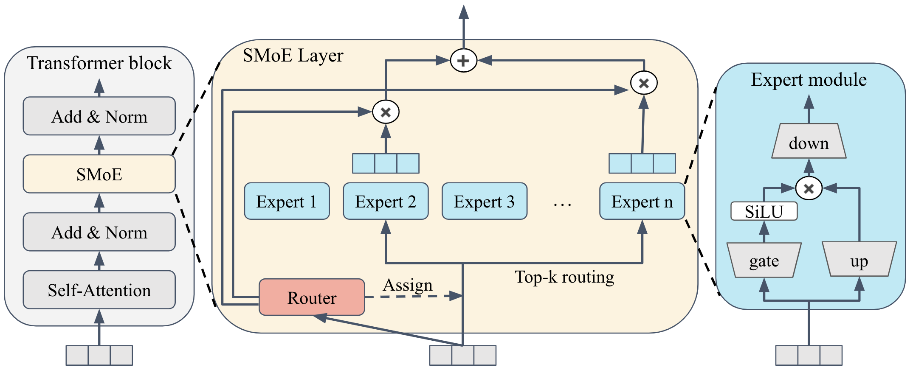
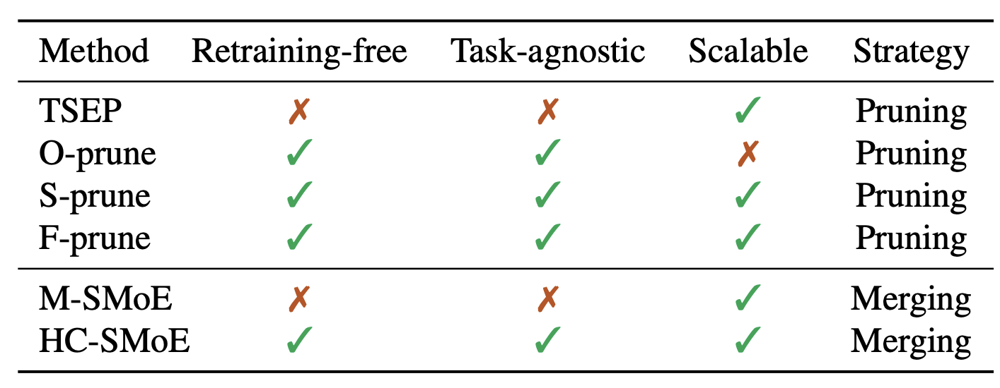
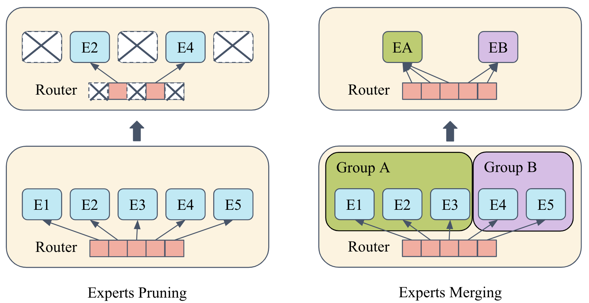
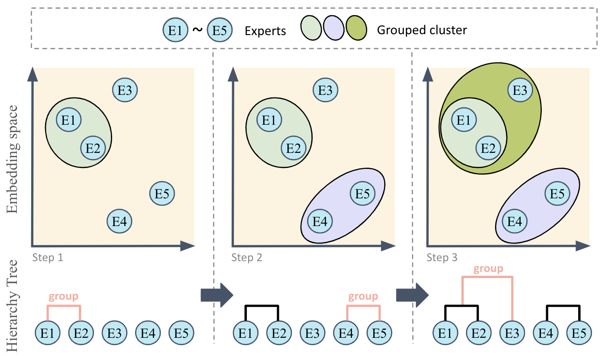
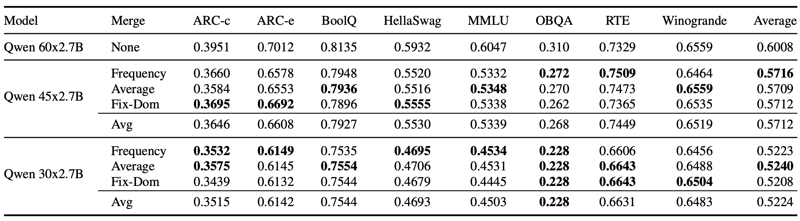
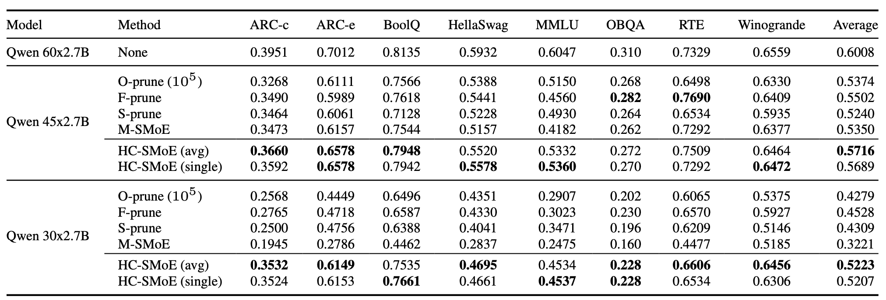
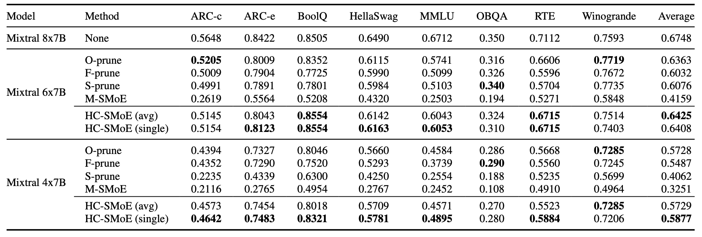

This blog post offers an introduction to our proposed HC-SMoE model compression method. We begin with an overview of SMoE architecture and current SMoE compression methods. Next, we introduce the pipeline of HC-SMoE and the rationale of why it works. Finally, we present experimental results to demonstrate the effectiveness of the proposed method.
The SMoE model comprises multiple SMoE layers, each of which contains a set of expert neural networks and a router network. Consider an input token $x$, a set of expert neural networks $\{E_1, E_2, ..., E_n\}$, and a router network $R$. The output $y$ of an SMoE layer is computed as a weighted sum of the expert network outputs, which can be expressed as:
$$y = \sum_{i=1}^{n} R(x)_i \cdot E_i(x), \quad E(x) = (\sigma(xW_{gate}) ⊙ (xW_{up}))W_{down},$$
where Pi(x) represents the $i$th expert routing score from $R$, and $E_i(x)$ denotes the $i$th expert network output.

Figure 1. General SMoE architecture.This architecture extends to recent models like Qwen [1] and Mixtral [2], which adopt the LLaMA [3] structure. The feed-forward network (FFN) in each expert implements three linear layers, where element-wise multiplication $\odot$ operates with weight matrices $W_{up}, W_{gate} \in \mathbb{R}^{d_h\times d_m}, W_{down} \in \mathbb{R}^{d_m\times d_h}$ , and Sigmoid Linear Unit (SiLU) activation function $\sigma$. The routing implementation employs an efficient top-k strategy to select experts with the highest logits from linear input transformation. A subsequent softmax operation on these k largest logits enables sparse expert activation, which reduces computational overhead. This selective mechanism is formulated as follows:
$$P(x) = \text{softmax}(\text{topK}(R(x))) = \text{softmax}(\text{topK}(xW_R)),$$
where $R(x)$ represents routing-logits and WR denotes the learnable parameter matrix. This sparsely activated architecture enables efficient scaling with preserved performance through selective computation. In turn, this mechanism allows the SMoE model to optimize computational efficiency and task performance through focused expert utilization.
This section reviews existing methods for expert reduction in SMoE architectures.

Table 1. A Comparison of different approaches for reducing the number of experts in SMoE.
Figure 2. Comparison of expert pruning and merging strategies.Our observation is that the key role in expert merging scenario is to correctly identify similar experts rather than using a complex merging method. First, we will start from the problem definition to introduce some notation. Next we elaborate how we cluster those experts, and merge them at the end.
In this study, we address the challenge of reducing the space complexity of an SMoE model through a process termed expert merging. This process consolidates existing experts in an SMoE layer into a smaller set while preserving the model’s performance. Each SMoE layer initially contains $n$ experts. We aim to merge these experts into $r$ clusters, where $r$ represents the target number of experts after merging.
For the $i$-th cluster, denoted as $C_i = \{E^i_0 , E^i_1, . . . , E^i_{|C_i|}\}$, $|C_i|$ represents the number of original experts assigned to this cluster. Unlike conventional model merging with predefined element combinations, expert merging in an SMoE necessitates a two-phase procedure due to its flexible solution space: first grouping experts into clusters, then merging within each cluster. During the merging phase, experts within each cluster combine into a single new expert, which reduces the total number of experts to $r$. The distribution of original experts across clusters satisfies $\sum_{i = 1}^r|C_i| = n$ which ensures that all original experts are accounted for in the merging process.
The primary objective of expert merging process is to minimize functional divergence between the compressed and original models. Motivated by evidence that output similarity correlates with functional equivalence [8-9], we propose utilizing average expert outputs over a calibration dataset $\mathcal{D}_{cal}$ with $T$ tokens. Specifically, for expert $E_j$ , the representative vector computation follows:
$$o_j := \mathbb{E}_{x∼\mathcal{D}_{cal}}[E_j (x)] = \frac 1 T \sum^T_{x\in\mathcal{D}_{cal}}E(x).$$
With a reliable expert similarity metric established, the subsequent step involves clustering SMoE experts into $r$ groups for the merging process. To achieve this objective, we employ Hierarchical Clustering (HC) as the core mechanism for grouping experts based on its capability to dynamically adapt cluster assignments while maintaining initialization robustness.

Figure 3. Illustration of the proposed hierarchical clustering strategy based on expert outputs. Each blue circle denotes the outputs of an expert in the embedding space. Hierarchical clustering would iteratively group the expert clusters with minimum cluster distance.Unlike static partitioning methods, HC combines experts through a bottom-up agglomerative process: starting with each expert as a singleton cluster, it recursively combines the most functionally similar pairs while continuously recalculating inter-cluster distances. This iterative recalibration reflects current functional affinities of evolving clusters and enables adaptation to emergent behaviors, a capability absent in static partitioning based approaches.
The clustering process requires two essential components: (1) a distance metric for measuring differences between expert output vectors, and (2) a linkage strategy for determining inter-cluster distances. Our implementation uses the Euclidean distance $d(e_i, e_j) = ||e_i − e_j||^2$, where $e_i$ and $e_j$ represent the metric values for computing distances between experts $i$ and $j$. For the linkage strategy, we investigate three methods: single, complete, and average:
$$\begin{align*} \text{single: }\quad\min_{a\in A, b\in B}d(a,b), \\ \text{complete: }\quad\max_{a\in A, b\in B}d(a,b), \\ \text{average: }\quad \frac{1}{|A|\cdot |B|}\sum_{a\in A}\sum_{b\in B}d(a, b), \end{align*}$$
where $A$ and $B$ represent clusters, and $a$ and $b$ denote experts that belong to these clusters. Single linkage defines cluster distances through the closest pair of elements, while complete linkage uses the maximum distance and often produces overly compact clusters that miss subtle similarities. Average linkage considers the mean pairwise distance between cluster elements and achieves an optimal balance. As a result, the proposed HC-SMoE framework employs average-linkage HC to optimize the trade-off between intracluster homogeneity and inter-cluster distinctiveness.
After clustering, the final step is to merge experts within each cluster to form a new expert. We adopt a frequency-based merging strategy, which computes a weighted average of the original experts in each cluster based on their activation frequencies over the calibration dataset $\mathcal{D}_{cal}$. For cluster $C_i = \{E^i_0 , E^i_1, . . . , E^i_{|C_i|}\}$, the merged expert $E^{new}_i$ is defined as:
$$E^{new}_i (x) := \sum_{j=0}^{|C_i|} \alpha^i_j E^i_j (x), \quad \alpha^i_j := \frac{f^i_j}{\sum_{k=0}^{|C_i|} f^i_k},$$
where $f^i_j$ denotes the activation frequency of expert $E^i_j$ over $\mathcal{D}_{cal}$. This weighted averaging approach ensures that more frequently activated experts contribute proportionally more to the merged expert, preserving their influence in the compressed model.
While we also found that merging strategy selection only has marginal impact when utilizing a general-purpose calibration dataset, the key role is to correctly cluster the experts into groups.

Table 2. Various merging methods with HC average linkage based on expert outputs. Fix-Dom represents fixed-dominant merging described in paper's Section 3.2.3. Avg in the Merge column denotes the average score among all the merging strategy under same model settings.In summary, our HC-SMoE framework effectively reduces the number of experts in SMoE models through a two-phase process of hierarchical clustering based on expert outputs, followed by frequency-weighted merging within clusters. This approach maintains functional integrity while achieving significant parameter reduction without retraining.
We conduct experiments on two SMoE models: Qwen1.5- MoE-A2.7B (henceforth Qwen) [1] and Mixtral 8x7B . For Qwen, we explore two levels of reduction: merging the number of experts from 60 to 45 and further to 30 per layer. This corresponds to a reduction in parameters from 14.3B to 11.2B (denoted as Qwen 45x2.7B), and subsequently to 8.1B (denoted as Qwen 30x2.7B). Similarly, Mixtral 8x7B undergoes reduction from eight to six experts and then to four experts per layer, decreasing the total parameters from 46.7B to 35.6B (denoted as Mixtral 6x7B) and further to 24.3B (denoted as Mixtral 4x7B). This graduated approach enables the evaluation of expert merging impact at different levels of model reduction. Experiments on Mixtral 8x7B and Qwen are conducted on eight NVIDIA A100 GPUs and four NVIDIA V100 GPUs, respectively.
All baselines and HC-SMoE require a calibration dataset to estimate input statistics. This dataset is constructed by sampling from the C4 corpus [10], concatenating extracted text into $32$ sequences of $2,048$ tokens each. To further validate the independence of HC-SMoE from the calibration dataset, we construct two additional datasets from MATH [11] and CodeQA [12]. Please refer to paper's Appendix B.3 for more details.

Table 3. Zero-shot comparison of Qwen1.5-MoE-A2.7B-Chat: original architecture v.s. reduced versions with 45 and 30 experts per layer. HC-SMoE (avg) stands for average linkage when performing hierarchical clustering. HC-SMoE (single) stands for single linkage.
Table 4. Zero-shot comparison of Mixtral 8x7B: original architecture v.s. reduced versions with six and four experts per layer.[1] Qwen Team. Qwen1.5-moe: Matching 7b model performance with 1/3 activated parameters. February 2024. URL https://qwenlm.github.io/blog/qwen-moe/
[2] Albert Q. Jiang, Alexandre Sablayrolles, Antoine Roux, Arthur Mensch, Blanche Savary, Chris Bamford, Devendra Singh Chaplot, Diego de las Casas, Emma Bou Hanna, Florian Bressand, Gianna Lengyel, Guillaume Bour, Guillaume Lample, Lélio Renard Lavaud, Lucile Saulnier, Marie-Anne Lachaux, Pierre Stock, Sandeep Subramanian, Sophia Yang, Szymon Antoniak, Teven Le Scao, Théophile Gervet, Thibaut Lavril, Thomas Wang, Timothée Lacroix, and William El Sayed. Mixtral of Experts. arXiv preprint arXiv:2401.04088, 2024.
[3] Hugo Touvron, Thibaut Lavril, Gautier Izacard, Xavier Martinet, Marie-Anne Lachaux, Timothée Lacroix, Baptiste Rozière, Naman Goyal, Eric Hambro, Faisal Azhar, Aurelien Rodriguez, Armand Joulin, Edouard Grave and Guillaume Lample. LLaMA: Open and Efficient Foundation Language Models. arXiv preprint arXiv:2302.13971, 2023.
[4] Tianyu Chen, Shaohan Huang, Yuan Xie, Binxing Jiao, Daxin Jiang, Haoyi Zhou, Jianxin Li and Furu Wei. Task-Specific Expert Pruning for Sparse Mixture-of-Experts. arXiv preprint arXiv:2206.00277, 2022.
[5] Xudong Lu, Qi Liu, Yuhui Xu, Aojun Zhou, Siyuan Huang, Bo Zhang, Junchi Yan and Hongsheng Li. Not All Experts are Equal: Efficient Expert Pruning and Skipping for Mixture-of-Experts Large Language Models. In Proceedings of the 62nd Annual Meeting of the Association for Computational Linguistics (ACL), 2024.
[6] Shwai He, Daize Dong, Liang Ding and Ang Li. Demystifying the compression of mixture-of-experts through a unified framework. arXiv preprint arXiv:2406.02500, 2024.
[7] Pingzhi Li, Zhenyu Zhang, Prateek Yadav, Yi-Lin Sung, Yu Cheng, Mohit Bansal and Tianlong Chen. Merge, Then Compress: Demystify Efficient SMoE with Hints from Its Routing Policy. In Proceedings of the Twelfth International Conference on Learning Representations (ICLR), 2024.
[8] Yixuan Li, Jason Yosinski, Jeff Clune, Hod Lipson and John Hopcroft. Convergent Learning: Do different neural networks learn the same representations? In Proceedings of the Fourth International Conference on Learning Representations (ICLR), 2016.
[9] George Stoica, Daniel Bolya, Jakob Bjorner, Pratik Ramesh, Taylor Hearn and Judy Hoffman. ZipIt! Merging Models from Different Tasks without Training. In Proceedings of the Twelfth International Conference on Learning Representations (ICLR), 2024.
[10] Colin Raffel, Noam Shazeer, Adam Roberts, Katherine Lee, Sharan Narang, Michael Matena, Yanqi Zhou, Wei Li and Peter J. Liu. Exploring the limits of transfer learning with a unified text-to-text transformer. Journal of machine learning research, 21 (140):1–67, 2020.
[11] Dan Hendrycks, Collin Burns, Saurav Kadavath, Akul Arora, Steven Basart, Eric Tang, Dawn Song and Jacob Steinhardt. Measuring mathematical problem solving with the math dataset. In Proceedings of Thirty-fifth Conference on Neural Information Processing Systems Datasets and Benchmarks Track (Round 2) (NeurIPS), 2021.
[12] Chenxiao Liu and Xiaojun Wan. Codeqa: A question answering dataset for source code comprehension. In Findings of the Association for Computational Linguistics: EMNLP 2021, pp. 2618–2632, 2021.
@inproceedings{chen2025hcsmoe,
title={Retraining-Free Merging of Sparse MoE via Hierarchical Clustering},
author={I-Chun Chen and Hsu-Shen Liu and Wei-Fang Sun and Chen-Hao Chao and Yen-Chang Hsu and Chun-Yi Lee},
year={2025},
booktitle={International Conference on Machine Learning (ICML)}
}